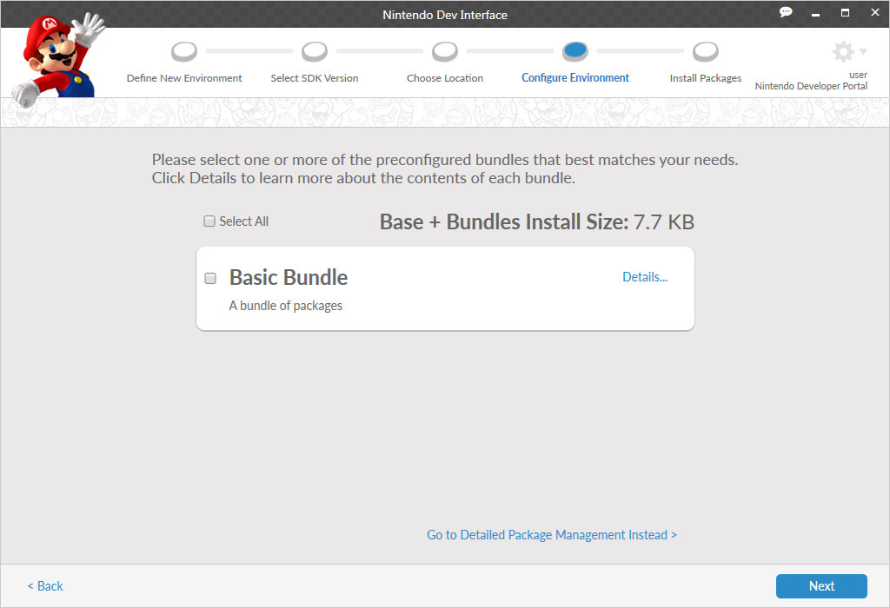

This screen is used to determine how NDI should proceed with environment installations. Two options are detailed below.
If you select this option, NDI guides you through the process of installing an environment to your development system, based on your specifications.
If you select this option, NDI assists you in creating a MegaZarf for a new environment. A MegaZarf is a file that contains all the information necessary to recreate that Environment in the future. MegaZarf files enable users to consistently and reliably recreate a development environment on any computer that is capable of running NDI. This option does not install any software to your development system.
The following section of this manual assumes that you are using the Install To Disk option. For more information about creating an archive, see the Install To Archive section at the end of this page.
When navigating to either option, if you have not logged into a server previously or if this is your first time running the application, you are presented with a Connect to Nintendo Server dialog box as shown below.
The fields in this dialog box are as follows.
To continue, select a server and enter your NDID credentials. If you do not have an NDID account, for more information, contact your regional Nintendo developer support group.
You can also allow the application to remember your information for future connections. If you would rather the application not save this information, uncheck the Remember Credentials check box.
After entering your credentials, click Connect to continue to the next screen.
You do not need to be connected to create an environment using a MegaZarf that contains all the required files to install it (often indicated by the name of the MegaZarf or a large file size), or to perform most actions when managing existing environments. If an action would require a connection to complete, the Connect to Nintendo Server dialog box will appear if you are not already connected.
After successfully connecting to a server, if your current version of NDI is not the latest version available you will be prompted to upgrade. Server authentication will complete after the upgrade is applied. It is possible to decline an upgrade, but you will not be able to authenticate with the server until the upgrade is completed.
In this step, you select the hardware platform, foundation, and (optionally) an additional tool set that determines which software packages you are able to install to the environment you are creating.
Select the hardware platform that you want the environment to develop for. Your selection of platform determines what tool sets and foundations you can choose for your environment.
Tool Sets are complementary files that may be installed alongside the foundation that you choose, such as Unity, Visual Studio support, or Nintendo Web Framework. Your choice of tool set determines what foundations are available for your environment.
Only one tool set may be added to each environment.
You may also choose not to install any additional tool sets by selecting the Standard option.
Some platform selections may not support additional tool sets.
When you click Next, the Choose Location screen is displayed.
After selecting your platform and tool set (if applicable), you are able to select a foundation package that is compatible with both of your previous choices.
In this step, you select the version of the foundation to be installed. Depending on the platform and foundation combination you previously selected, one of two different selection methods are displayed. If there are add-on packages for the selected platform that correspond to the selected foundation, a version list for each add-on package is displayed. This allows you to select a version of each add-on package and prevents you from selecting any that conflict with each other. Click on the question mark icon next to a selection to display a description for that version.
Making a selection does not prevent you from changing the selection later in the environment creation process.
If there are no additional add-ons for the platform and foundation you selected, a list of foundation versions to choose from is displayed. Click on the question mark icon to display a description and any important notes about each selection.
On occasion, only one version of a foundation will be available. In such a case, no selection menu will be shown and information about the version will be displayed automatically.
When you click Next, the Choose Location screen is displayed.
If Install to Archive was selected on the Environment Destination screen, the Configure Environment screen will be displayed instead.
In this step, you enter the base installation directory for the environment that you want to create. The fields are as follows.
If there is a conflict with the name of the environment entered, an error message appears informing you of the issue.
In this step, you choose the software packages that are installed when initially creating your environment. Not all packages are required, and you may choose to install other packages at a later time. You can select packages in two different ways: by Bundle Selection or through Detailed Package Management.
Initially, you are presented with the Bundle Selection screen, as shown below.

The individual selections on this screen represent software packages that have been grouped together for a specific purpose. This might be because they are useful to a particular development role, such as Artist or Tester, or because the software has interdependent features. These bundles are intended to help you make selections of the packages you wish to install. You may select any combination of bundles, or one bundle individually, to suit your development needs. Click a bundle to select or deselect it.
Click the Details link to open a window with more information on the software packages that are included in the bundle.
Click the Next button in the lower right corner to display a list of all packages that have been selected, including file size. From this screen, click Install to begin installation of all packages from the selected bundles. If no bundles are selected, only the software packages required by the foundation and tool set (if applicable) are installed.
Instead of installing packages based on bundles, you can make choices about the packages that will be installed to your environment. To start this process, click the Detailed Package Management button. Any packages belonging to bundles that have been selected, will automatically be set to install on the following package selection screen. For more information about detailed package selection, see the 3.1.4 Custom Package Selection section.
Some packages selected for installation have an End User License Agreement (EULA) that you will need to review. The EULAs are displayed when you click Install and must be accepted for the associated software to begin installation. After a package has been installed, you only need to accept the EULA again if you delete the software from all environments on your system.
When you have specified the packages that you want to install, the download and installation process begins.
The download process indicates the progress of individual packages as they are downloaded from the server. Packages that have been previously downloaded and saved to the cache will not be redownloaded. The following is a screen that shows the beginning of the download process.
After all packages have been downloaded, they are then installed. The following is a screen showing that packages have started installing while others are still waiting to be installed.
When all packages have finished installing, the Finish button becomes selectable. Click Finish to return to the Welcome screen.
If you have chosen to create a MegaZarf archive, you are presented with the following screen.
In this step, you enter information about the MegaZarf file that will be created. A MegaZarf file contains all the information required for any instance of NDI to recreate the environment it contains.
To create a MegaZarf, the following information must be provided.
After entering all required information, click Next in the lower right corner to continue. For more information, return to step 1 Define New Environment earlier in this section. As you continue, step 3 Choose Location is omitted from the environment creation process.
CONFIDENTIAL